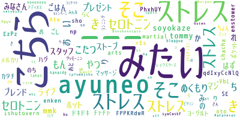
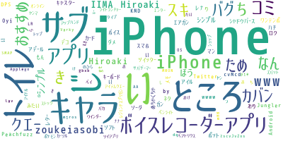
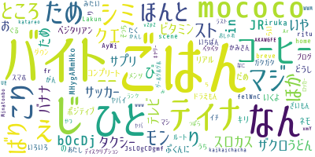
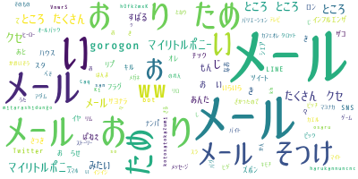

最近結構時間があるからいろいろやりたかったことができて楽しい
やりたかったことの一つにPythonというプログラミング言語を使ってみることがあった
主に機械学習とか統計系のライブラリが豊富で、ほかにもクローラーとかブラウザ操作、ファイル編集など、別に理系職じゃなくても将来使える場面が多そうなスクリプト言語だからちょっと触ってみたいなと前から思ってた
それで作ってみたのがタイトル通り、Twitter APIからキーワードに関連するツイートを取ってきて、ちょっと前流行ったワードクラウドを生成するというもの
Twitterって、文字通り思ったことを気軽に「つぶやく」ことができる場だから、人々の思ってることが結構情報として集まってるんじゃないかなと思って前からちょっとやってみたかった
Twitter APIは無料枠だと直近7日間の最新100ツイートしかとれないから数が少ないし、最新100ツイートのタイムスパンはかなり短いから結構データとしては偏ってると思う
形容詞で検索したらそれに関する名詞が集まって面白いかなと思っていくつか形容詞で検索してみた
「寒い」
「使いにくい」
「だるい」
「うっとうしい」
マイナスな形容詞をばっかだけど、プラスな形容詞とか、地名とかで検索しても面白かった
こんなんが素人の自分でもすぐ作れちゃうのはすごい時代だなぁと思った
最先端の技術が簡単に使える中で、それをどう価値を生み出せるものにするかっていうのが大事やなっていうのも感じた
最後に、参考までに今回のコードになります
import sys
import twitter
from janome.tokenizer import Tokenizer
from wordcloud import WordCloud
search_target = sys.argv[1]
hinshi = sys.argv[2] if len(sys.argv) > 2 else "名詞"
api = twitter.Api(consumer_key='******',
consumer_secret='******',
access_token_key='******',
access_token_secret='******')
search_results = api.GetSearch(term=search_target, result_type="recent", count=100)
print(len(search_results))
tokenizer = Tokenizer()
separated_text = ""
for search_result in search_results:
for token in tokenizer.tokenize(search_result.text):
if token.part_of_speech.split(',')[0] == hinshi:
separated_text += token.base_form + " "
wordCloud = WordCloud(font_path="C:\\Users\\Masato\\Downloads\\KokuMaruMinchoKana-Regular.otf",
stopwords={search_target, "RT", "https", "http", "co", "こと", "それ", "さん", "する", "いる", "です", "れる",\
u'てる', u'いる', u'なる', u'れる', u'する', u'ある', u'こと', u'これ', u'さん', u'して', \
u'くれる', u'やる', u'くださる', u'そう', u'せる', u'した', u'思う', \
u'それ', u'ここ', u'ちゃん', u'くん', u'', u'て',u'に',u'を',u'は',u'の', u'が', u'と', u'た', u'し', u'で', \
u'ない', u'も', u'な', u'い', u'か', u'ので', u'よう', u'', "き", "どれ", "とき", "あれ", "もの"},
background_color="white").generate(separated_text)
wordCloud.to_file("C:\\Users\\Masato\\Desktop\\word_cloud.png")
{kind=link}
{kind=link}
{kind=link}
{kind=link}